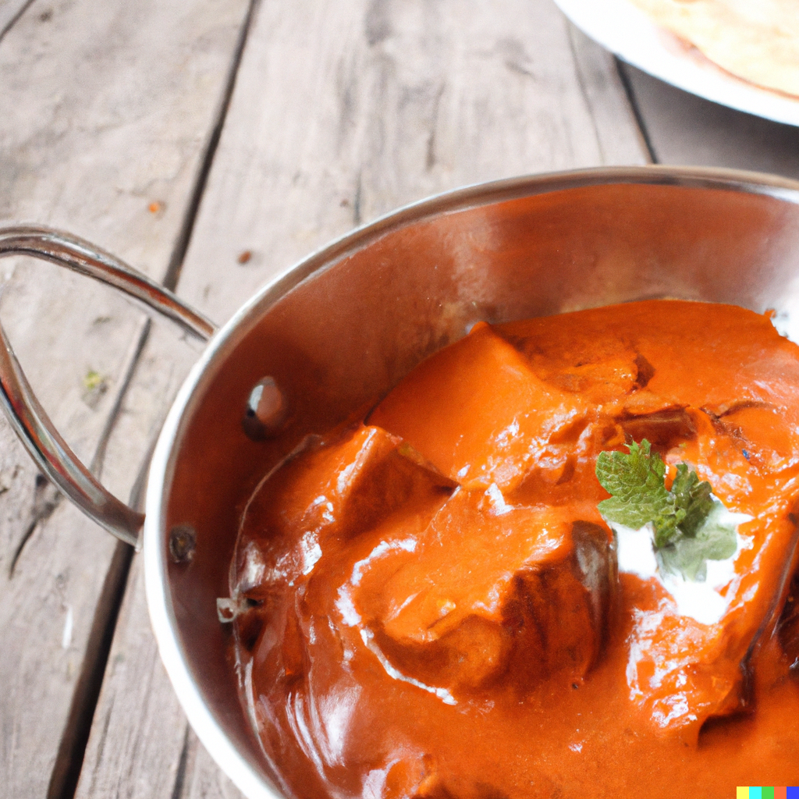

Butter Chicken

Description
Butter chicken is a popular Indian dish that features tender chicken in a creamy and flavorful tomato-based sauce. The dish is known for its rich and complex flavor, which comes from a blend of aromatic spices and a touch of sweetness. It's a crowd-pleasing dish that's perfect for a special occasion or just a cozy night in. With a few basic ingredients and some simple techniques, you can recreate this classic dish at home.
Ingredients
- 1 pound boneless, skinless chicken breasts, cut into bite-sized pieces
- 1 cup of plain yogurt
- 1 large onion, chopped
- 2 cloves of garlic, minced
- 2 teaspoons of grated ginger
- 2 teaspoons of garam masala
- 1 teaspoon of ground cumin
- 1 teaspoon of ground coriander
- 1/2 teaspoon of turmeric
- 1/4 teaspoon of cayenne pepper
- 1 can of crushed tomatoes
- 1 cup of heavy cream
- Salt and pepper to taste
Instructions
- In a large bowl, mix together the chicken and yogurt. Cover and refrigerate for at least 1 hour, or overnight.
- In a large skillet or Dutch oven, heat the ghee or butter over medium-high heat.
- Add the onion, garlic, and ginger and sauté until the onion is translucent, about 5 minutes.
- Add the garam masala, cumin, coriander, turmeric, and cayenne pepper to the skillet and cook until fragrant, about 1-2 minutes.
- Add the marinated chicken and cook until browned on all sides, about 5-7 minutes.
- Pour in the crushed tomatoes and stir to combine. Reduce the heat to low and simmer for 15-20 minutes.
- Pour in the heavy cream and stir to combine. Simmer for an additional 5-10 minutes, or until the sauce has thickened and the chicken is cooked through.
- Pour in the crushed tomatoes and stir to combine. Reduce the heat to low and simmer for 15-20 minutes.
- Season with salt and pepper to taste.
- Serve hot, garnished with fresh cilantro and accompanied by rice or naan bread. Enjoy!